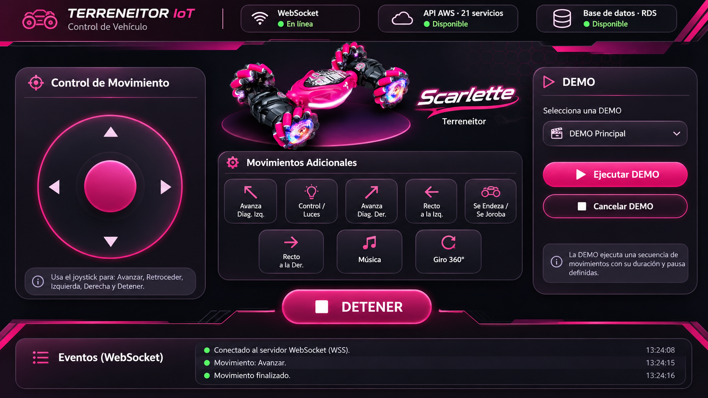

Vista previa · Sin sesión. Controles deshabilitados.
Control de movimiento
Usa el joystick para avanzar, retroceder, girar y detener el vehículo.

Movimientos adicionales
Estado físico de luces desconocido. La secuencia local solo será estimada si el vehículo parte de su estado inicial.Sincronizar indicador Control/Luces
Confirma solo si el control remoto está apagado y en su estado inicial. Esto no envía comandos ni comprueba el vehículo.
Estado desconocido. Confirma el estado inicial para iniciar la estimación.
DEMO · Ver controles
DEMO
Secuencia de movimientos con duración y pausas definidas.
Eventos WebSocket · Ver historial
Eventos (WebSocket)
Sin conexión WebSocket
Eventos pendientes de conexión segura.